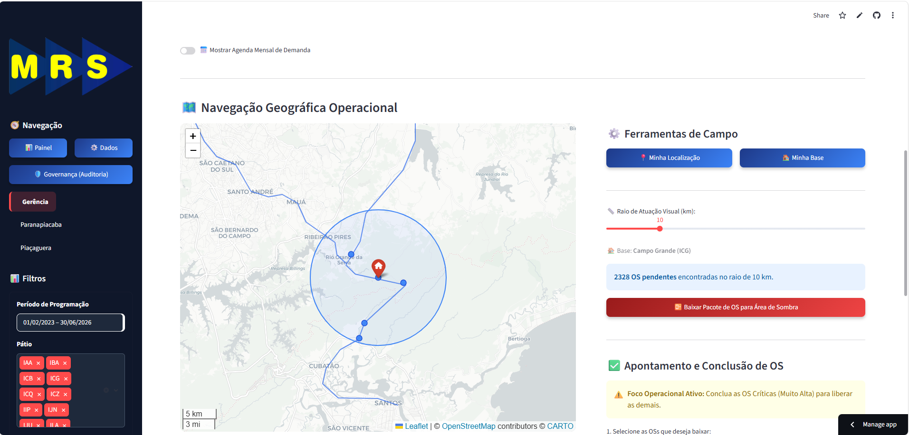

Inteligência de Malha Integrada
SGO Eletroeletrônica MRS
A tecnologia operacional aplicada à ponta da linha de ferro.
Papel
Rastreabilidade
Operação Offline
A Desconexão Operacional
Onde a operação perde eficiência entre o escritório e os trilhos.
1. O Risco da Decisão Humana
O técnico analisa uma lista de dezenas de OSs e escolhe a atividade pelo "feeling". Sem visão sistêmica ou geográfica, geramos viagens perdidas e baixa produtividade.
2. Desvio da Programação
A ausência de travas sistêmicas em campo permite que a execução real se distancie do que foi planejado, comprometendo os indicadores da manutenção.
3. Falta de Priorização
Para o papel, todas as OSs têm o mesmo peso. Frequentemente, uma preventiva de baixo impacto concorre por atenção com uma falha de confiabilidade crítica.
4. Visão Cega Pós-Emergência
O técnico é acionado para um chamado urgente. Após resolver, o que fazer? Sem visão espacial do trecho, a equipe retorna à base deixando manutenções vizinhas para trás.
O Fluxo de Dados Operacional
Como transformamos informações brutas em inteligência para tomada de decisão.
SAP ERP
Exportação do SAP
Dados Brutos Operacionais
Motor Python
Limpeza Automática
Cruzamento de Informações
Tradução para Inteligência
Core SGO
Geolocalização Topológica
Regras de Negócio e Travas
Nuvem SGO
Banco de Dados Seguro
Informação Pronta para Uso
Roteirização Geográfica
O aplicativo abandona o conceito de lista e adota a geolocalização inteligente.
Inteligência Geográfica (Cálculo de Distância Real)
O motor cruza as coordenadas de GPS em tempo real do técnico com o nosso dicionário espacial da ferrovia. Com o botão "Filtrar", entrega visualmente apenas as OSs dentro do raio de atuação escolhido (início em 1 km, ajustável).

Decisão Sistêmica, Não Humana
A Trava de Prioridade
Tiramos o peso da decisão das costas do técnico. O sistema dita a regra operacional.
- Identifica qualquer OS Muito Alta (Segurança / Confiabilidade Crítica), independente da data.
- Bloqueia as OSs de menor prioridade do mesmo grupo — que permanecem visíveis (sombreadas + 🔒), sem sumir da tela.
- Força a equipe a atacar e resolver a emergência antes de prosseguir com manutenções preventivas normais.
Resiliência Extrema: PWA Offline
A operação continua fluída mesmo sem sinal de rádio ou 4G no trecho — via aplicativo instalado (PWA HTTPS), nunca por arquivo solto.
1. Publicar a Rota (PWA)
Na base, com internet, o gestor clica em "Publicar Rota PWA". O técnico abre o link seguro (HTTPS) uma única vez e o pacote fica instalado no celular como um app.
2. Modo Local Seguro
No trecho sem sinal, o PWA roda direto no aparelho em contexto seguro (HTTPS). O GPS do celular permanece ativo e os apontamentos e fotos ficam guardados localmente (IndexedDB).
3. Sincronização
Ao reconectar, o app envia todos os apontamentos e fotos ao servidor de uma só vez. A gravação é idempotente: zero perda e zero duplicidade.
Governança e Auditoria
A confiança é boa, mas o controle sistêmico é à prova de falhas.
Geofencing Estrito
A Baixa Eletrônica só é aceita se o GPS atestar que o aparelho está num raio máximo de 2,0 km da coordenada oficial do ativo na linha (cálculo Haversine).
GPS Obrigatório e Real
A fonte de localização é sempre o hardware do aparelho, em contexto HTTPS seguro. Coordenada (0,0) é rejeitada pela API (HTTP 400) — sem apontamento "fantasma", sem fallback frágil por foto.
Evidência Fotográfica
Cada baixa exige foto, tratada e enviada ao repositório na nuvem, formando o histórico visual auditável da malha.
Gestão de Tempos e Movimentos
Tempo Médio de Execução Real
Acabou a dependência da memória do técnico para registrar horários.
O painel captura exatamente a hora de acesso ao sistema e subtrai da hora de conclusão da 1ª atividade, revelando o nosso verdadeiro Tempo de Mobilização da equipe.
Controle Inteligente de Jornada
Se um turno noturno inicia às 22h e a OS é encerrada à 01h da manhã, o sistema compreende a travessia de dias. Ele calcula a data correta automaticamente e alerta os gestores para inconsistências de jornada, protegendo a empresa.
A Máquina Tecnológica
Portal Web
Telas interativas, mapas instantâneos e gráficos gerenciais focados na facilidade de uso do técnico e do gestor.
Processador Central
Recebe as fotos de campo, comprime o tamanho dos arquivos e cruza as informações de forma 100% automática e segura.
Banco de Dados
Armazenamento de alta segurança na nuvem. Separação rigorosa: senhas e acessos totalmente isolados dos dados operacionais da ferrovia.
Nuvem de Arquivos
Repositório infinito e seguro para guardar todas as fotos e evidências da operação, garantindo o histórico fotográfico da malha.
Deploy 03/Jul — O que entrou no ar
A rodada de estabilização que blindou a operação de campo.
GPS Obrigatório
Fonte única: o hardware. Antifraude por foto (EXIF) aposentado. API rejeita (0,0) com HTTP 400.
Distribuição PWA HTTPS
Publicar Rota → abrir 1x online → usar offline. Contexto seguro que libera o GPS mesmo sem sinal.
Login Persistente
Token seguro na sessão (12h). A câmera não derruba mais o acesso do técnico em campo.
Botão "Filtrar" + Raio 1 km
Fim do auto-refresh: busca por proximidade mais precisa, app mais leve e rápido.
Baixa em Massa (Horário Único)
Um Data/Hora replicado a várias OS de uma vez. Filtro CI/SI também no offline.
OS Bloqueadas Visíveis
Muito Alta trava as menores (sombreado + 🔒), sem sumir. Baixas sem duplicidade na tela.
O Novo Padrão da Eletroeletrônica de SP
A transformação digital real, gerando eficiência e governança na ponta da linha.
100%
Auditoria Integrada
Governança garantida pelo sistema via GPS obrigatório e geofencing de 2,0 km.
Zero
Decisão às Cegas
Fim das viagens perdidas com a roteirização automática de tarefas.
Real
Automação no SAP
Integração que erradica o retrabalho de digitação manual de relatórios no escritório.
A Síntese da Transformação
O que entregamos hoje para a MRS.
O que Resolvemos
Acabamos com o "voo às cegas" operacional. Eliminamos o uso de papel, as viagens perdidas, a falta de priorização de emergências e o enorme retrabalho de digitação no escritório.
Como Resolvemos
Levando tecnologia ao campo com: Roteirização por GPS, travas sistêmicas contra decisões erradas e PWA Offline (HTTPS) para garantir fluidez no trecho.
Padrão Ouro
Entregamos uma Governança Intocável: integração limpa com o SAP, auditoria por GPS obrigatório e geofencing de 2,0 km e medição gerencial do real Tempo de Execução (TME).